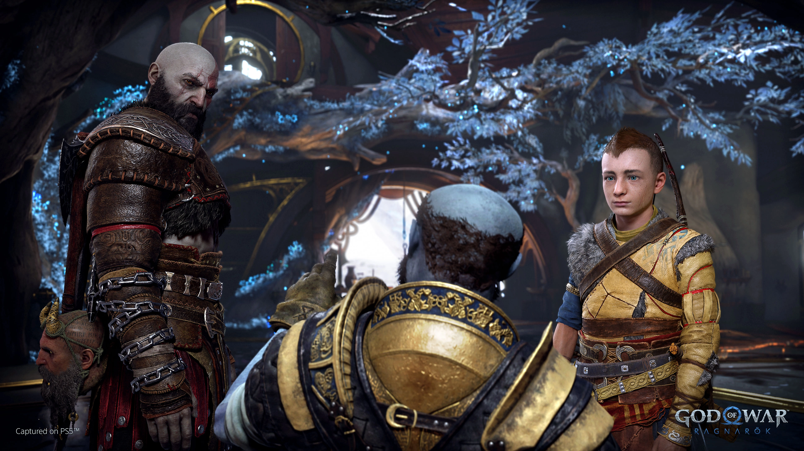

Principales noticias del mundo de los Video Juegos
Video Juegos: Salen a la luz nueva informacion acerca de God of War Ragnarok

Tras convertirse en una de las mayores franquicias de la familia PlayStation, la saga God of War vuelve con el nuevo God of War Ragnarok para PS5 y, con ello, la épica continuación de la historia de Kratos y su hijo Atreus por parte de Sony Santa Monica.
APEX LEGENDS: Nuevo Modo Arenas tiene entusiasmados a los jugadores
Las Arenas es un nuevo modo de juego permanente que llegará a Apex Legends como parte de la próxima actualización, Legado. Condensa el caos de las partidas de Battle Royale de 20 pelotones en un combate 3 contra 3 más centrado. Te enfrentarás al enemigo sin que ningún otro pelotón se cuele en la fiesta, lo que te permitirá concentrarte en sobrevivir y ganar la batalla. Competirás en varias rondas para intentar ser el último pelotón en pie en cada una de ellas.
Ganes o pierdas, cada ronda empezará de cero con el equipo básico y algunos materiales que podrás usar. Decide cómo iniciar la siguiente ronda: usa los materiales para obtener armas, mejorarlas y recoger los suministros adicionales que necesites. El nivel subirá en cada ronda a medida que se concedan más materiales que en la ronda anterior, lo que te dará más opciones y te permitirá mejorar conforme avance la partida (no te preocupes, los materiales no se pueden comprar: tendrás que jugar y completar rondas para obtenerlos).
Cuando obtengas un arma, será la básica, sin accesorios. Las armas se podrán mejorar a nivel blanco, después azul y, por último, morado. Al mejorar un arma, se equipará con todos los accesorios disponibles de ese nivel. Si mejoras hasta el nivel morado, se llenará el espacio de mejora para las armas que tengan una. Selecciona la mira que prefieras para cada arma. La mejora desbloqueará miras adicionales para el arma.
Si bien este nuevo modo de arenas viene saliendo, los jugadores no tardaron en sacar sus mejores jugadas dentro de este nuevo modo. Echemos un vistazo a uno de estos cuantos clips.